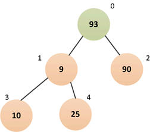
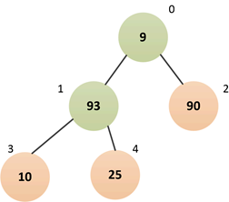

Java多线程进阶（三四）—— J.U.C之collections框架：PriorityBlockingQueue
一、PriorityBlockingQueue简介
PriorityBlockingQueue，是在JDK1.5时，随着J.U.C包引入的一种阻塞队列，它实现了BlockingQueue接口，底层基于堆实现：
PriorityBlockingQueue是一种无界阻塞队列，在构造的时候可以指定队列的初始容量。具有如下特点：
- PriorityBlockingQueue与之前介绍的阻塞队列最大的不同之处就是：它是一种优先级队列，也就是说元素并不是以FIFO的方式出/入队，而是以按照权重大小的顺序出队；
- PriorityBlockingQueue是真正的无界队列（仅受内存大小限制），它不像ArrayBlockingQueue那样构造时必须指定最大容量，也不像LinkedBlockingQueue默认最大容量为
Integer.MAX_VALUE； - 由于PriorityBlockingQueue是按照元素的权重进入排序，所以队列中的元素必须是可以比较的，也就是说元素必须实现
Comparable接口； - 由于PriorityBlockingQueue无界队列，所以插入元素永远不会阻塞线程；
- PriorityBlockingQueue底层是一种基于数组实现的堆结构。
关于堆，如果读者不了解，可以参考下我的这篇博文预热下——优先级队列。
注意：堆分为“大顶堆”和“小顶堆”，PriorityBlockingQueue会依据元素的比较方式选择构建大顶堆或小顶堆。比如：如果元素是Integer这种引用类型，那么默认就是“小顶堆”，也就是每次出队都会是当前队列最小的元素。
二、PriorityBlockingQueue原理
2.1 构造
PriorityBlockingQueue提供了四种构造器：
/**
* 默认构造器.
* 默认初始容量11, 以元素自然顺序比较(元素必须实现Comparable接口)
*/
public PriorityBlockingQueue() {
this(DEFAULT_INITIAL_CAPACITY, null);
}
/**
* 指定初始容量的构造器.
* 以元素自然顺序比较(元素必须实现Comparable接口)
*/
public PriorityBlockingQueue(int initialCapacity) {
this(initialCapacity, null);
}
/**
* 指定初始容量和比较器的构造器.
*/
public PriorityBlockingQueue(int initialCapacity,
Comparator<? super E> comparator) {
if (initialCapacity < 1)
throw new IllegalArgumentException();
this.lock = new ReentrantLock();
this.notEmpty = lock.newCondition();
this.comparator = comparator;
this.queue = new Object[initialCapacity];
}
/**
* 从已有集合构造队列.
* 如果已经集合是SortedSet或者PriorityBlockingQueue, 则保持原来的元素顺序
*/
public PriorityBlockingQueue(Collection<? extends E> c) {
this.lock = new ReentrantLock();
this.notEmpty = lock.newCondition();
boolean heapify = true; // true if not known to be in heap order
boolean screen = true; // true if must screen for nulls
if (c instanceof SortedSet<?>) { // 如果是有序集合
SortedSet<? extends E> ss = (SortedSet<? extends E>) c;
this.comparator = (Comparator<? super E>) ss.comparator();
heapify = false;
} else if (c instanceof PriorityBlockingQueue<?>) { // 如果是优先级队列
PriorityBlockingQueue<? extends E> pq = (PriorityBlockingQueue<? extends E>) c;
this.comparator = (Comparator<? super E>) pq.comparator();
screen = false;
if (pq.getClass() == PriorityBlockingQueue.class) // exact match
heapify = false;
}
Object[] a = c.toArray();
int n = a.length;
if (a.getClass() != Object[].class)
a = Arrays.copyOf(a, n, Object[].class);
if (screen && (n == 1 || this.comparator != null)) { // 校验是否存在null元素
for (int i = 0; i < n; ++i)
if (a[i] == null)
throw new NullPointerException();
}
this.queue = a;
this.size = n;
if (heapify) // 堆排序
heapify();
}
重点是第三种构造器，可以看到，PriorityBlockingQueue内部也是利用了ReentrantLock来保证并发访问时的线程安全。
PriorityBlockingQueue如果不指定容量，默认容量为11，内部数组queue其实是一种二叉树，后续我们会详细介绍。
需要注意的是，PriorityBlockingQueue只有一个条件等待队列——notEmpty，因为构造时不会限制最大容量且会自动扩容，所以插入元素并不会阻塞，仅当队列为空时，才可能阻塞“出队”线程。
public class PriorityBlockingQueue<E> extends AbstractQueue<E>
implements BlockingQueue<E>, java.io.Serializable {
/**
* 默认容量.
*/
private static final int DEFAULT_INITIAL_CAPACITY = 11;
/**
* 最大容量.
*/
private static final int MAX_ARRAY_SIZE = Integer.MAX_VALUE - 8;
/**
* 内部堆数组, 保存实际数据, 可以看成一颗二叉树:
* 对于顶点queue[n], queue[2*n+1]表示左子结点, queue[2*(n+1)]表示右子结点.
*/
private transient Object[] queue;
/**
* 队列中的元素个数.
*/
private transient int size;
/**
* 比较器, 如果为null, 表示以元素自身的自然顺序进行比较（元素必须实现Comparable接口）.
*/
private transient Comparator<? super E> comparator;
/**
* 全局锁.
*/
private final ReentrantLock lock;
/**
* 当队列为空时，出队线程在该条件队列上等待.
*/
private final Condition notEmpty;
// ...
}
2.2 插入元素——put(E e)
PriorityBlockingQueue插入元素不会阻塞线程，put(E e)方法内部其实是调用了offer(E e)方法：
首先获取全局锁（对于队列的修改都要获取这把锁），然后判断下队列是否已经满了，如果满了就先进行一次内部数组的扩容（关于扩容，我们后面会专门讲）：
/**
* 向队列中插入指定元素.
* 由于队列是无界的，所以不会阻塞线程.
*/
public void put(E e) {
offer(e); // never need to block
}
public boolean offer(E e) {
if (e == null)
throw new NullPointerException();
final ReentrantLock lock = this.lock; // 加锁
lock.lock();
int n, cap;
Object[] array;
while ((n = size) >= (cap = (array = queue).length)) // 队列已满, 则进行扩容
tryGrow(array, cap);
try {
Comparator<? super E> cmp = comparator;
if (cmp == null) // 比较器为空, 则按照元素的自然顺序进行堆调整
siftUpComparable(n, e, array);
else // 比较器非空, 则按照比较器进行堆调整
siftUpUsingComparator(n, e, array, cmp);
size = n + 1; // 队列元素总数+1
notEmpty.signal(); // 唤醒一个可能正在等待的"出队线程"
} finally {
lock.unlock();
}
return true;
}
上面最关键的是siftUpComparable和siftUpUsingComparator方法，这两个方法内部几乎一样，只不过前者是一个根据元素的自然顺序比较，后者则根据外部比较器比较，我们重点看下siftUpComparable方法：
/**
* 将元素x插入到array[k]的位置.
* 然后按照元素的自然顺序进行堆调整——"上浮"，以维持"堆"有序.
* 最终的结果是一个"小顶堆".
*/
private static <T> void siftUpComparable(int k, T x, Object[] array) {
Comparable<? super T> key = (Comparable<? super T>) x;
while (k > 0) {
int parent = (k - 1) >>> 1; // 相当于(k-1)除2, 就是求k结点的父结点索引parent
Object e = array[parent];
if (key.compareTo((T) e) >= 0) // 如果插入的结点值大于父结点, 则退出
break;
// 否则，交换父结点和当前结点的值
array[k] = e;
k = parent;
}
array[k] = key;
}
siftUpComparable方法的作用其实就是堆的“上浮调整”，可以把堆可以想象成一棵完全二叉树，每次插入元素都链接到二叉树的最右下方，然后将插入的元素与其父结点比较，如果父结点大，则交换元素，直到没有父结点比插入的结点大为止。这样就保证了堆顶（二叉树的根结点）一定是最小的元素。（注：以上仅针对“小顶堆”）
2.3 堆的“上浮”调整
我们通过示例来理解下入队的整个过程：假设初始构造的队列大小为6，依次插入9、2、93、10、25、90。
①初始队列情况

②插入元素9（索引0处）
将上述数组想象成一棵完全二叉树，其实就是下面的结构：
③插入元素2（索引1处）
对应的二叉树：
由于结点2的父结点为9，所以要进行“上浮调整”，最终队列结构如下：
④插入元素93（索引2处）
⑤插入元素10（索引3处）
⑥插入元素25（索引4处）
⑦插入元素90（索引5处）
此时，堆不满足有序条件，因为“90”的父结点“93”大于它，所以需要“上浮调整”：
最终，堆的结构如上，可以看到，经过调整后，堆顶元素一定是最小的。
2.4 扩容
在入队过程中，如果队列内部的queue数组已经满了，就需要进行扩容：
public boolean offer(E e) {
// ...
while ((n = size) >= (cap = (array = queue).length)) // 队列已满, 则进行扩容
tryGrow(array, cap);
// ...
}
我们来看下tryGrow方法：
private void tryGrow(Object[] array, int oldCap) {
lock.unlock(); // 扩容和入队/出队可以同时进行, 所以先释放全局锁
Object[] newArray = null;
if (allocationSpinLock == 0 &&
UNSAFE.compareAndSwapInt(this, allocationSpinLockOffset,
0, 1)) { // allocationSpinLock置1表示正在扩容
try {
// 计算新的数组大小
int newCap = oldCap + ((oldCap < 64) ?
(oldCap + 2) :
(oldCap >> 1));
if (newCap - MAX_ARRAY_SIZE > 0) { // 溢出判断
int minCap = oldCap + 1;
if (minCap < 0 || minCap > MAX_ARRAY_SIZE)
throw new OutOfMemoryError();
newCap = MAX_ARRAY_SIZE;
}
if (newCap > oldCap && queue == array)
newArray = new Object[newCap]; // 分配新数组
} finally {
allocationSpinLock = 0;
}
}
if (newArray == null) // 扩容失败（可能有其它线程正在扩容，导致allocationSpinLock竞争失败）
Thread.yield();
lock.lock(); // 获取全局锁(因为要修改内部数组queue)
if (newArray != null && queue == array) {
queue = newArray; // 指向新的内部数组
System.arraycopy(array, 0, newArray, 0, oldCap);
}
}
上述整个过程还是比较清晰的，由于调用tryGrow的方法一定会先获取全局锁，所以先释放锁，因为可能有线程正在出队，扩容/出队是可以并发执行的（扩容的前半部分只是新建一个内部数组，不会对出队产生影响）。扩容后的内部数组大小一般为原来的2倍。
上述需要注意的是allocationSpinLock字段，该字段通过CAS操作，置1表示有线程正在进行扩容。
2.5 删除元素——take()
删除元素（出队）的整个过程比较简单，也是先获取全局锁，然后判断队列状态，如果是空，则阻塞线程，否则调用dequeue方法出队：
/**
* 出队一个元素.
* 如果队列为空, 则阻塞线程.
*/
public E take() throws InterruptedException {
final ReentrantLock lock = this.lock;
lock.lockInterruptibly(); // 获取全局锁
E result;
try {
while ((result = dequeue()) == null) // 队列为空
notEmpty.await(); // 线程在noEmpty条件队列等待
} finally {
lock.unlock();
}
return result;
}
private E dequeue() {
int n = size - 1; // n表示出队后的剩余元素个数
if (n < 0) // 队列为空, 则返回null
return null;
else {
Object[] array = queue;
E result = (E) array[0]; // array[0]是堆顶结点, 每次出队都删除堆顶结点
E x = (E) array[n]; // array[n]是堆的最后一个结点, 也就是二叉树的最右下结点
array[n] = null;
Comparator<? super E> cmp = comparator;
if (cmp == null)
siftDownComparable(0, x, array, n);
else
siftDownUsingComparator(0, x, array, n, cmp);
size = n;
return result;
}
}
从dequeue方法可以看出，每次出队的元素都是“堆顶结点”，对于“小顶堆”就是队列中的最小值，对于“大顶堆”就是队列中的最大值。
我们看下siftDownComparable方法如何实现堆顶点的删除：
/**
* 堆的"下沉"调整.
* 删除array[k]对应的结点,并重新调整堆使其有序.
*
* @param k 待删除的位置
* @param x 待比较的健
* @param array 堆数组
* @param n 堆的大小
*/
private static <T> void siftDownComparable(int k, T x, Object[] array, int n) {
if (n > 0) {
Comparable<? super T> key = (Comparable<? super T>) x;
int half = n >>> 1; // 相当于n除2, 即找到索引n对应结点的父结点
while (k < half) {
/**
* 下述代码中:
* c保存k的左右子结点中的较小结点值
* child保存较小结点对应的索引
*/
int child = (k << 1) + 1; // k的左子结点
Object c = array[child];
int right = child + 1; // k的右子结点
if (right < n && ((Comparable<? super T>) c).compareTo((T) array[right]) > 0)
c = array[child = right];
if (key.compareTo((T) c) <= 0)
break;
array[k] = c;
k = child;
}
array[k] = key;
}
}
上述代码其实是经典的堆“下沉”操作，对堆中某个顶点下沉，步骤如下：
- 找到该顶点的左右子结点中较小的那个；
- 与当前结点交换；
- 重复前2步直到当前结点没有左右子结点或比左右子结点都小。
2.6 堆的“下沉”调整
来看个示例，假设堆的初始结构如下，现在出队一个元素（索引0位置的元素2）。
①初始状态

对应二叉树结构：
②将顶点与最后一个结点调换
即将顶点“2”与最后一个结点“93”交换，然后将索引5为止置null。

注意：*为了提升效率（比如siftDownComparable的源码所示）并不一定要真正交换，可以用一个变量保存索引5处的结点值，在整个下沉操作完成后再替换。但是为了理解这一过程，示例图中全是以交换进行的。*
③下沉索引0处结点
比较元素“93”和左右子结点中的最小者，发现“93”大于“9”，违反了“小顶堆”的规则，所以交换“93”和“9”，这一过程称为siftdown（下沉）：

④继续下沉索引1处结点
比较元素“93”和左右子结点中的最小者，发现“93”大于“10”，违反了“小顶堆”的规则，所以交换“93”和“10”：
⑤比较结束
由于“93”已经没有左右子结点了，所以下沉结束，可以看到，此时堆恢复了有序状态，最终队列结构如下：
三、总结
PriorityBlockingQueue属于比较特殊的阻塞队列，适用于有元素优先级要求的场景。它的内部和ArrayBlockingQueue一样，使用一个了全局独占锁来控制同时只有一个线程可以进行入队和出队，另外由于该队列是无界队列，所以入队线程并不会阻塞。
PriorityBlockingQueue始终保证出队的元素是优先级最高的元素，并且可以定制优先级的规则，内部通过使用堆（数组形式）来维护元素顺序，它的内部数组是可扩容的，扩容和出/入队可以并发进行。